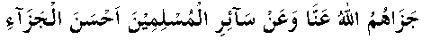

Hadhrat 'Umar (RA) narrates: "Once Nabi (Sallallahu Alayhi Wasallam) asked for contributions in the path of Allah Ta’ala. In those days, I was in possession of some wealth. I thought to myself that, 'Time and again Hadhrat Abu Bakr (RA) has beat me in spending for the sake of Allah Ta’ala. I shall by the Grace of Allah Ta’ala beat him this time because I have in my possession some wealth to spend'. I went home happy with the idea. I divided my wealth into exactly two equal parts. One half I left for my family and with the other half I rejoined Nabi (Sallallahu Alayhi Wasallam).
Nabi (Sallallahu Alayhi Wasallam) asked me: 'Did you leave anything for your family, 'Umar?'
'Yes, O Nabi of Allah,' I replied.
'How much 'Umar?' asked Nabi (Sallallahu Alayhi Wasallam).
'Exactly one-half,' I replied.
In the meantime, Hadhrat Abu Bakr (RA) came along with his contribution. It became apparent that he had brought everything that he had possessed.
Nabi (Sallallahu Alayhi Wasallam) asked Hadhrat Abu Bakr (RA): 'What did you leave for your family, Abu Bakr?'
Hadhrat Abu Bakr (RA) replied: 'I have left Allah and His Nabi (Sallallahu Alayhi Wasallam) for them.' ”
Hadhrat 'Umar (RA) says that on that day he admitted to himself that he could never hope to beat Hadhrat Abu Bakr (RA).
Allah says in his Holy Book, "Compete with one another in good works (V:48)."
Such healthy emulation in sacrifice is therefore quite desirable and welcome. This incident happened at the time of the Tabuk expedition, when the Sahaabah (RA) in response to Nabi (Sallallahu Alayhi Wasallam) appeal for help contributed beyond their means. This has already been mentioned in part two. May Allah Ta’ala grant them the best rewards on behalf of all the Muslims!
